Created: 21 June 2020 / Finished: 26 June 2020
Ion implantation is a common process used in the semiconductor industry to change the properties of a material, namely silicon (the substrate). (Si will be used interchangeably with "substrate" throughout the article, but other semiconductors, like Ge, can be substituted.)
This article discusses why ion implantation is needed and how it is done.
First, why are ions shot into Si? What does it do from a physics perspective?
The reason has to do with the band gap, the energy range between the valence band and conduction band.
Within Si exist both electrons (negatively-charged) and electron hole (positively-charged). The hole is a bit of an oddity: it's an unoccupied space where an electron could exist, but doesn't at that moment. While not literally a particle, they can be treated and thought of as such. Current can be viewed as the flow of electrons or holes. When a bias is applied, electrons begin to move and occupy holes. When electron A moves to hole B, hole A is formed. This propagates and creates the flow of charge, or current.
What does this have to do with Si? Si has four valence electrons in its four states of 3s23p2. Those four valence electrons covalently bond with the surrounding Si crystal lattice structure, effectively filling that Si atom's valence shell. So, when an ion is introduced into the lattice that does not have four valence electrons, one of two things happen: there are free electrons (if the number of valence electrons is >4, such as in phosphorus's case) or free holes (valence electrons <4, such as boron). In the first case, four of P's electrons have bonded to surrounding Si atoms' valence electrons, leaving the fifth one free and able to contribute to current—a donor impurity, because it donates an electron. This creates an n(egative)-type semiconductor. In the second case, three of B's electrons have bonded to surrounding Si atoms, but one Si atom and the B atom both have incomplete valence shells (7/8, 6/8 filled, respectively). To fill the vacancy, the Si and B will pull a free electron from the lattice, leaving a hole in its place—an acceptor impurity, because it accepts an electron. This creates an p(ositive)-type semiconductor.
The Fermi energy level, \(E_{F}\), is the energy level at which the probability an electron exists there is 0.5, based on the Fermi-Dirac distribution:
\[f(E) = \frac{1}{1 + \exp\left(\frac{E - E_{F}}{k_{B}T}\right)}\]\(E_{F}\) for an intrinsic semiconductor (no impurities added) is given by:
\[E_{F} = E_{i} = \frac{E_{C} + E_{V}}{2} + \frac{k_{B}T}{2}\ln\left(\frac{N_{V}}{N_{C}}\right)\]where \(E_{i}\) is the intrinsic Fermi level, a constant, and \(N_{C}\) and \(N_{V}\) are the effective density of states. (Note that the link only shows you density of states, \(g(E)\), not effective DOS. The effective DOS derivation can be found here.)
While \(E_{i}\) cannot change, \(E_{F}\) can based on the number of ionized impurities present in the substrate. When an n-type dopant is added, \(E_{F}\) shifts up towards the conduction band, decreasing the \(E_{C} - E_{F}\) gap. Similarly, when a p-type dopant is added, \(E_{F}\) shifts down towards the valence band, decreasing the \(E_{F} - E_{V}\) gap. Because there are now electrons sitting at the new n-type \(E_{F}\) level, even a small amount of thermal energy can excite them into the conduction band, creating current. For the p-type, electrons can also be excited to \(E_{F}\), leaving holes in the valence band, creating currrent.
It's this change in the \(E_{F}\) value that drives modern-day devices (admittedly, some other things help, too). By combining two substrates—one n-type and one p-type—and creating a p-n junction, both of the \(E_{F}\) levels must match up. The p-n junction is the basis for transistors, proving the importance of ion implantation in devices.
Two common terms used are dose and concentration. They are similar, but not synonymous. Dose is number of ions per unit area (cm2), while concentration is number of ions per unit volume (cm3).
Given beam current, \(I\) (charge/time), and time spent implanting, \(t\), the total amount of implanted charge is simply \(Q = It\). Dose, \(\phi\) (number/area), can be multiplied by the elementary charge, \(q\), and scan area, \(A\), to also get the total implanted charge. Integrating the current with respect to time can also calculate dose, which is actually how the tool itself calculates dose (see dose measurement). Equating the first two and solving for dose gives:
\[\phi = \frac{It}{qA} = \frac{1}{qA} \int I(t) \, dt\]Dose can also be found be integrating the concentration, \(N(x)\), with respect to depth:
\[\phi = \int N(x) \, dx\]The concentration of an implant can be approximated if the range, \(R_{p}\), and straggle, \(\Delta R_{p}\), are known (range and straggle values are experimentally-determined and based on energy):
\[N(x) = N_{0} \exp\left(-\frac{(x - R_{p})^{2}}{2\Delta R_{p}^{2}}\right) = \frac{\phi}{\Delta R_{p} \sqrt{2\pi}} \exp\left(-\frac{(x - R_{p})^{2}}{2\Delta R_{p}^{2}}\right)\]The \(N(x)\) equation above is a simple Gaussian function, but is not entirely representative of how actual implant profiles look. To better simulate real profiles, the Pearson IV distribution and moments are used, which accomodate for the skewness that often occurs.
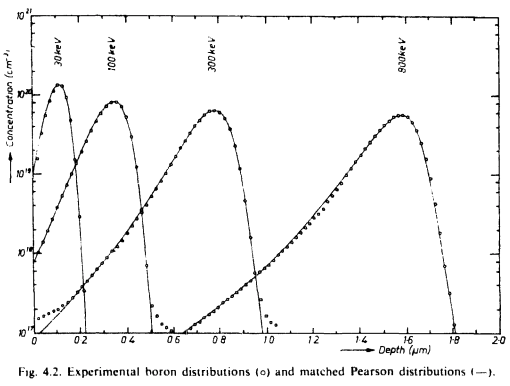The respective moments are as follows:
The integral limits are from 0 to \(\infty\) because a negative number would not make sense when referring to depth. Using all of those, the Pearson equation can be solved and specific values substituted in to the IV solution. For specifics, see pages 8-12 of Dr. Alan Doolittle's lecture.
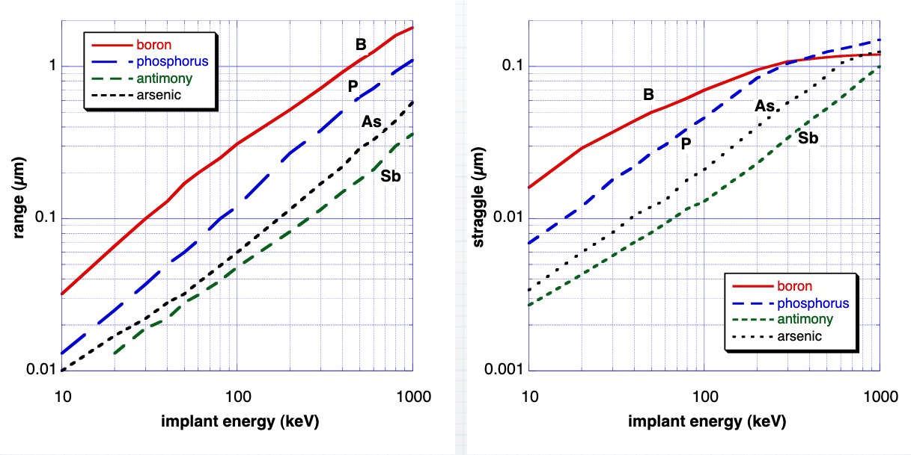A typical concentration vs. depth Gaussian curve is shown below:
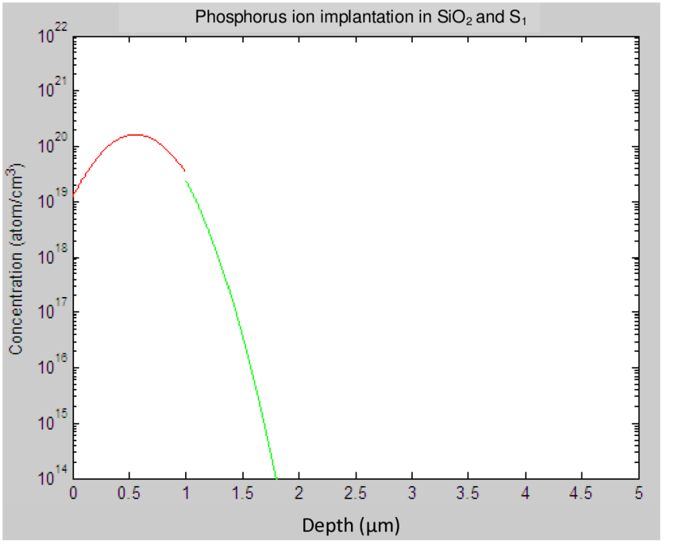The concentration profile makes intuitive sense, especially if you rotate the image 90° and superimpose the mask and substrate onto it:
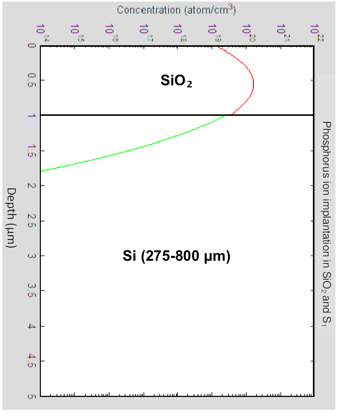It is seen that the peak concentration occurs about halfway through the SiO2. The concentration steadily decreases from there as it exits the SiO2 and enters the Si. As seen in the graph above for range and straggle vs. energy, increasing energy will result in deeper implants and a shifting of the Gaussian curve to the right, while also flattening it due to increased straggle.
The junction depth, \(x_{j}\), is the depth at which the impurity concentration equals the substrate concentration, or:
\[N_{\text{imp}}(x_{j}) = N_{\text{sub}}\]This is the location of the p-n junction, where \(N_{A} = N_{D}\). To find this depth, simply find the substrate concentration, trace a horizontal line on the concentration vs. depth plot, find the intersection of the two, then simply draw another line vertically down to the x-axis. This is the junction depth.
Desired junction depth can be achieved by choosing the energy and species based off their range and straggle values:
\[\begin{align*} N_{\text{sub}} &= N_{\text{imp}}(x_{j}) \\ &= N_{0} \exp\left(-\frac{(x_{j} - R_{p})^{2}}{2\Delta R_{p}^{2}}\right) \\ \ln\left(\frac{N_{\text{sub}}}{N_{0}}\right) &= -\frac{(x_{j} - R_{p})^{2}}{2\Delta R_{p}^{2}} \\ (x_{j} - R_{p})^{2} &= 2\Delta R_{p}^{2}\ln\left(\frac{N_{0}}{N_{\text{sub}}}\right) \\ x_{j} &= R_{p} \pm \sqrt{2\Delta R_{p}^{2}\ln\left(\frac{N_{\text{sub}}}{N_{0}}\right)} \\ \end{align*}\]Based on this, there can be two junction depths if a more complete Gaussian curve describes the concentration and/or the substrate concentration is high enough (\(N_{\text{sub}} > N_{\text{imp}}(x = 0)\)).
One rudimentary way of calculating junction depth is the groove-and-stain method. After grinding a shallow cylindrical groove into the substrate surface, a dye is applied that only reacts with one type of present impurity, staining that area. There will then be two distinct areas: one dyed and one plain. The junction depth can then be found using basic geometry:
\[x_{j} = \sqrt{R^{2} - \frac{w_{2}^{2}}{4}} - \sqrt{R^{2} - \frac{w_{1}^{2}}{4}}\] 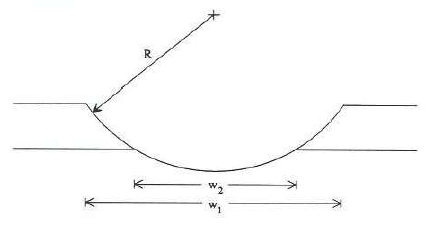Once the ions enter the lattice, they have to stop somehow. Two mechanisms cause stopping: nuclear stopping and electronic stopping. The stopping power is then just the sum of both the nuclear and electron stopping components, measured in energy loss per unit path length of the ion:
\[S(E) = S_{n} + S_{e} = \frac{dE_{n}}{dx} + \frac{dE_{e}}{dx}\] 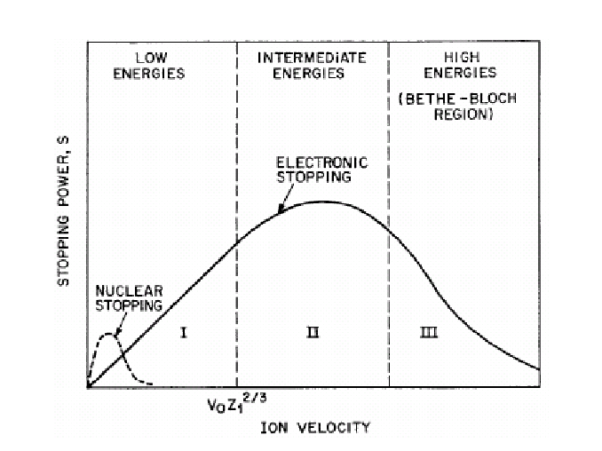More detailed derivations can be found here.
Nuclear stopping is caused by the collision of the ion into the substrate's nuclei. If the incoming ion's energy exceeds the substrate's displacement energy, the substrate atom will break its four covalent bonds and become displaced from its original position. Depending on the ion's initial energy, a collision cascade can occur: both the ion and first-displaced atom will knock into more atoms and displace those. This continues until both the ion energy and last-displaced atom energy are less than the displacement energy.
Heavier atoms, such as As+, will slow down primarily because of nuclear stopping. Their collisions with substrate atoms are more elastic, so energy loss will be less than the electronic component. For low energies (low velocity), nuclear stopping is the primary mechanism up to a certain point, but electronic stopping will eventually take over.
Nuclear stopping damages the lattice (even causing sputtering) and calls for an activation anneal.
Electron stopping is caused by the interaction between the ion and both bound and free electrons (electron cloud) within the substrate. Given that all implantable ions are cations, they will all react similarly to electrons. The ion continually slows down due to the attraction to/drag of the electrons, eventually stopping.
High velocity ions slow down primarily due to electronic stopping. Their collisions with substrate atoms are highly inelastic. Electronic stopping dominates at moderate energies.
The approximation for electron stopping power is:
\[S_{e} = 4\left(\frac{Z_{1}^{7/6}Z_{2}}{\left(Z_{1}^{2/36} + Z_{2}^{2/3}\right)^{3/2}}\right)a_{0}Nv\]where \(Z_{1}\) is the ion atomic number, \(Z_{2}\) is the substrate atomic number, \(a_{0}\) is the Bohr radius, \(N\) is the substrate atomic density (atoms per unit volume), and \(v\) is the ion velocity. (I can't seem to find a source on this. Seems to be from one of Lin53, Lin61a, Lin61b from this references section, but even digital copies don't seem to exist.)
Because of the damage caused by nuclear stopping, the lattice must be repaired to improve conduction and integrate the impurities into the lattice. The defects that result are primarily vacancies and interstitials. In a vacancy defect, a lattice point is missing an atom: this is caused by either the ion or substrate atom collision (as in the collision cascade). However, this missing atom leaves a place for an implanted ion to become part of the lattice structure, thus "activating" it (the activation energy has to be met). Interstitials refer to atoms that are present in the lattice, but not at a normal lattice point.
Annealing is a high-temperature process, and with high temperature comes movement from the atoms. The previous Gaussian estimation can then be modeled by including the ion diffusivity multiplied by the anneal time in the straggle terms:
\[N(x) = \frac{\phi}{\sqrt{\Delta R_{p}^{2} + 2D_{\text{ion}}t} \sqrt{2\pi}} \exp\left(-\frac{(x - R_{p})^{2}}{2\left(\Delta R_{p}^{2} + 2D_{\text{ion}}t\right)}\right)\]While skewness remains 0, straggle and kurtosis increase as the curve flattens out.
The most common dopants are boron, phosphorus, and arsenic. Aluminum and antimony are occassionally used, but their high diffusivity pose issues for devices.
Gases, such as AsH3, PH3, and BF3, are used to form the ions. Gas is flowed into a small chamber that contains a basic thermionic filament. Electrons are emitted and collide with the gas, ionizing it and forming positive ions within the chamber.
Ionization is the process of adding or removing an electron from a neutral atom, e.g., F becomes F-. In elements that lose an electron, the ionization energy is the amount of energy required to remove one electron from the atom's valence band. To remove the first of He's two valence electrons, 24.6 eV (eV is electronvolts, the amount of energy produced by accelerating one electron through one volt). Ionization energy increases for each valence electron removed. For example, to remove Ne's eighth valence electron requires 239 eV, compared to 21.5 eV for its first. For an implant gas like arsine (AsH3), around 15 eV is required to dissociate the molecule into a As+ cation (positively-charged electron).
Multiple ions can form from the same source gas. For example, BF3 may ionize into 10B+, 11B+, 10BF+, 11BF+, F2+, 10BF2+, and 11BF2+. To find the relative percentage of each in the plasma, the gas spectrum, which shows the beam current vs. atomic masses, needs to be analyzed.
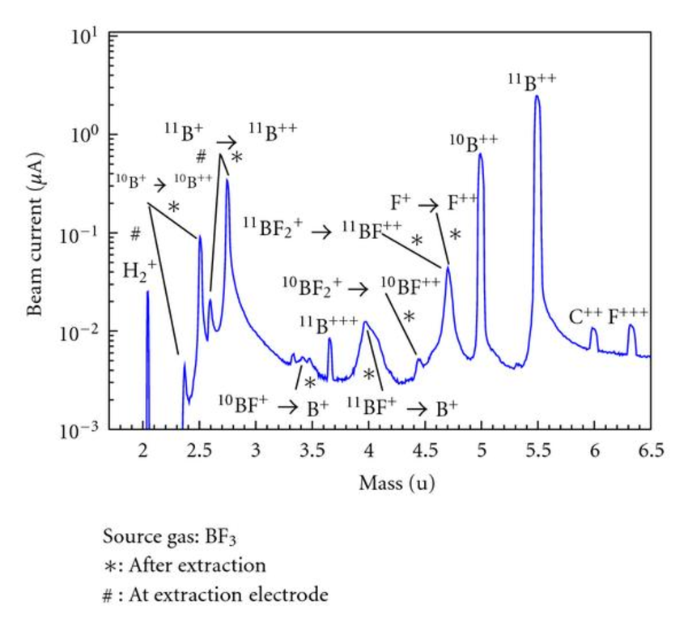To increase the probability of ionization, magnets are used to make the electron follow a helical path from one end to the other, rather than just a straight line from anode to cathode.
This continuous ionization of the source gas forms a plasma within the ion source chamber. A vacuum line connected to a vacuum pump is connected to maintain millitorr levels of pressure. Once there is a sufficient amount of ions to form the beam, a large voltage is used to extract the positive ions from the chamber and direct them towards the mass analyzer.
Most source gases are highly toxic and carcinogenic. See PEL/TLV data for almost all implant gases here.
There are two common types of mass filters: the magnetic sector and radio frequency quadrupole (RFQ). The magnetic sector uses a magnetic field to curve the various species orthogonally from their original path, using the equation:
\[qvB = \frac{mv^{2}}{r} \to r = \frac{1}{B}\sqrt\frac{2mV_{ext}}{q}\]Where \(B\) is the magnetic field strength, \(m\) is the species' mass, \(V_{ext}\) is the extracting voltage, \(v = \sqrt{\frac{2qV_{ext}}{m}}\) is the ion velocity, and \(q\) is the species' charge. Depending on the species' mass, some may go less than, equal to, or greater than the desired angle.
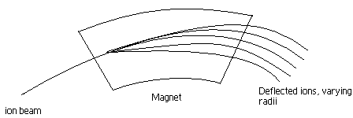While the magnetic sector is a relatively robust method, it does pose issues. Take a P+ cation and a diatomic O2+ cation. P+ has an atomic mass of 30.9738 amu (an electron has a mass of 0.0005 amu, which is negligible). O2+ has an atomic mass of 31.9988 amu. Given a constant extraction voltage and magnetic field strength, the differences in radii will be only 1.61%. This minute difference can cause oxygen to be present in the beam, possibly ruining the implantation.
After the desired ions have been sorted from the undesired, they are accelerated, collimated, and condensed into the final beam.
The acceleration column is kept under as high of vacuum as possible to minimize the amount of stray particles the beam hits, which can cause it to be deflected. The final ion energy is a simple calculation:
\[E_{f} = q\left(V_{ext} + V_{acc}\right)\]Graphite apertures are commonly used in forming the beam. By designing slits correctly in successive apertures, parts of the beam that stray out are eliminated, leaving only the most parallel ions. They are replaced as needed.
The endstation is where the actual implantation takes place. Because each substrate has millions of places (read: transistors) that need implanting and the ion beam is not large enough to cover the entire substrate uniformly, scanning needs to occur. (Sometimes the term rastering is used synonymously, but that is a specific type of scanning. "Scanning" will be used to avoid confusion.)
Because the magnetic sector only distinguishes based on mass and not charge, some neutrals may be a part of the beam. In order to prevent them from being implanted, some implanters include a small bend at the end of the acceleration column, where an electric field deflects the charged particles one way while the neutrals continue on to nowhere.
In mechanical scanning, the substrate is attached via clamping or centrifugal force to a robotic arm and moves around a stationary beam. The substrate holder also needs tilting capabilities, otherwise the tilt angle will be 0° (beam is naturally orthogonal to substrate). The primary advantage is a constant tilt angle to ensure consistent implanting across the wafers.
Mechanical scanning is preferred for high dose implants, which use high beam currents.
In electrostatic scanning, variable electric fields in both the x and y direction scan the beam across a stationary wafer. This requires a narrow beam, which is generally given by low dose and low current implants. Electrostatic scanning is avoided on high current tools because the beam tends to expand with higher currents, causing poor scanning control. The tilt angle will also vary as the beam scans over the wafer, causing channeling and uniformity issues.
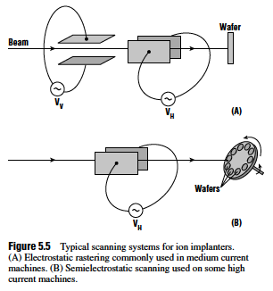To actively measure the dose, a Faraday cup is used. Using the equation from the dose vs. concentration section, the dose is able to be found using an integrator:
\[\phi = \frac{1}{qA} \int I(t) \, dt\]When positive ions strike an insulator, e.g., SiO2, an electric field can form. If this field becomes large enough, the device can be damaged or even ruined altogether. To prevent this electric field from forming, the positive ions need to be neutralized simply by adding an electron. To this, a plasma is struck using the same method as in the ion source: a filament emits electrons that ionize the nearby gas(es). Ar is commonly used. The plasma, being filled with electrons, diffuses into the beam path and the electrons combine with the positive ions directly before they reach the the substrate.
Varian, arguably the leader in ion implantation technology, has published a paper explaining the plasma flood gun and its operation here.
High vacuum is required to prevent beam deflection or contaminants being implanted. This paper discusses vacuum system design for ion implanters.
Masks are used to block certain areas from being affected by a process. In ion implantation, a mask is used to prevent specific areas of the substrate from being implanted. After all, the source and drain of MOSFET wouldn't necessarily be a source and drain if everywhere around it was doped the same.
So, how to decide which mask to use? A few things about the mask must be considered: cost, stopping power, adhesion to the substrate surface, compatibility with the substrate itself (for example, Cu diffuses very quickly into Si, which can pose later issues in devices). Amorphous (non-crystalline) and high-density materials are best due to larger stopping powers. Common masks include SiO2, Si3N4, photoresist (specific science here), Ti, and W.
Masks can also be used when forming shallow implants. Simply by knowing \(R_{p}\) and \(\Delta R_{p}\) of the mask and substrate, the energy can be adjusted to push the ions completely past the mask and only a small depth into the substrate. This will take trial-and-error, as the ion energy as they leave the mask is unknown.
Photoresist masks should be chosen based on a few parameters. First, the temperature at which it softens. If being used at a mask, it is likely to have already been post-develop-baked (also called hard bake). Any temperature above the hard bake temperature may cause reflow, which can easily ruin the entire process. There are multiple ways to avoid this:
High energies can cause strong cross-linking of the resist, making removal more difficult than normal. However, because high-energy ions don't make it to the bottom of the resist, a lift-off process can be performed to more easily remove the strongly-cross-linked parts of the resist.
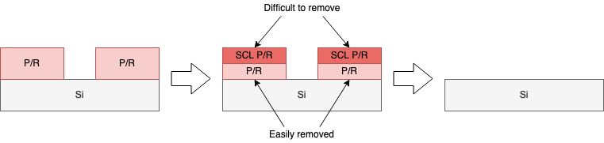If the photoresist mask has been ruled out, the other two options are dielectric, such as SiO2 or Si3N4, or metals, such as Ti, W, or silicides of either (TiSi2, WSi2). Range and straggle of the implanted species into the selected material should be chosen. Denser materials are obviously better masks.
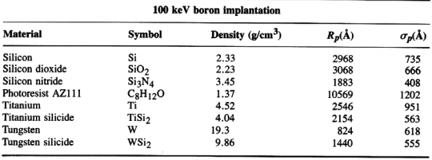Other materials have been analyzed using a range of energies and species:
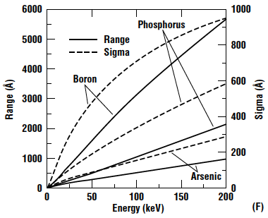Using data like this, both the mask thickness and material can be chosen based on the species and energy.
Channeling occurs when the ion beam is angled such that there are few obstacles, in this case, atoms, in its path. Take B+. Its atomic radius is around 85 pm ("p" being pico, or 10-12). Viewing the diamond cubic structure of Si from the [110] direction provides very wide openings, or channels, for the ion beam to penetrate. Ions can travel extremely far into the lattice if the beam angle is orthogonal to the axis.
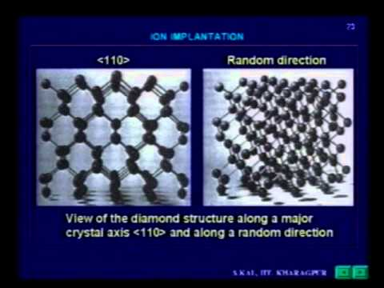There are a few methods to prevent channeling:
The mask height and channel width must be considerd when tilting. Basic trigonometry requires a tilt angle no larger than:
\[\theta_{\text{tilt}} = \tan^{-1}\left(\frac{w_{\text{channel}}}{h_{\text{mask}}}\right)\]In practice, this limitation is essentially negligible. The mask (generally photoresist or a dielectric like SiO2/Si3N4) is between 100-1000 nm and the channel width to be implanted is 10-2000 nm (no sources on either of these despite combing through Google Scholar, but I've heard these numbers thrown around). These give minimum and maximum angles of:
\[\theta_{\text{tilt, small}} = \tan^{-1}\left(\frac{10}{1000}\right) = 0.57^{\circ} \quad \theta_{\text{tilt, large}} = \tan^{-1}\left(\frac{2000}{100}\right) = 87^{\circ}\]Again, these numbers are extreme. No manufacturer will be creating 10 nm source/drain widths with 1000 nm mask heights, nor 2000 nm S/D widths with 100 nm mask heights. More appropriate numbers would be 100 nm mask for 10 nm width and 1000 nm mask with 2000 nm width, giving:
\[\theta_{\text{tilt, small}} = \tan^{-1}\left(\frac{10}{100}\right) = 5.71^{\circ} \quad \theta_{\text{tilt, large}} = \tan^{-1}\left(\frac{2000}{1000}\right) = 63.4^{\circ}\]Additionally, there will be a shadowing effect if any tilt angle is used.
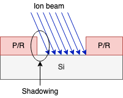To fix this, a twist angle is added. The twist rotates the substrates so the shadowed region will be exposed to the ion beam. A "quad" implant may also be performed by implanting at 0, 90°, 180°, and 270°.
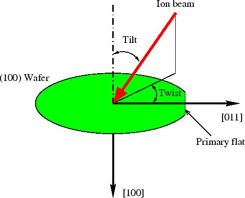To find the minimum angle (critical angle) to prevent channeling, the following equation is claimed (1, 2, 3):
\[\Psi = 9.73^{\circ} \sqrt{\frac{Z_{\text{ion}}Z_{\text{sub}}}{E_{\text{ion}}d}}\]where \(Z_{\text{ion/sub}}\) are the ion and substrate atomic numbers, \(E_{0}\) is the ion energy in keV, and \(d\) is the substrate atomic spacing along the ion path in angstroms. However, the sources that use this equation provide no references to where this came from, nor do the square root argument's dimensions make sense. For this equation to provide units of degrees, the argument needs to be unitless, but it's not:
\[\begin{align*} \Psi &= [^{\circ}] \sqrt{\frac{[][]}{[\frac{\text{C} \cdot \text{kg} \cdot \text{m}^{2}}{\text{s}^{3} \cdot \frac{\text{C}}{\text{s}}}][\text{m}]}} \\ &= [^{\circ}] \sqrt{\frac{1}{[\frac{\text{kg} \cdot \text{m}^{3}}{\text{s}^{2}}]}} \\ &= [^{\circ}] \sqrt{\frac{\text{s}^{2}}{\text{kg} \cdot \text{m}^{3}}} \end{align*}\]This equation has also been claimed for critical angle:
\[\begin{align*} \Psi &= \sqrt{\frac{2Z_{\text{ion}}Z_{\text{sub}}q^{2}}{E_{\text{ion}}d}} \\ &= \sqrt{\frac{\text{C}^{2} \cdot \text{s}^{2}}{\text{kg} \cdot \text{m}^{3}}} \end{align*}\]As seen, the dimensions do not cancel out, so neither equation holds in that regard. Dr. Stephen Campbell (author of Fabrication Engineering, one textbook where this equation is used) said via email:
That equation came from the first edition of the book, now more than 20 years ago. As I remember it, it was strictly empirical. You will find a few equations like this in the book. The truth about this field, however inconvenient, is that the development of detailed understanding of fabrication processes often lags a decade or more compared to the development of these processes. I don't know of a theoretical analysis of this topic.
(If you have an original source for this equation, please contact me.)
Modern implanters have both good angle and dose uniformity (see "Representative Ion Implantation Systems" section here): less than 0.1° and one σ < 0.5%. The dose uniformity is primarily a function of the dose measurement system, which can adjust in real-time for any errors that occur (beam turning off, spiking in current, etc).
While doping remains a necessity for device fabrication, ion implantation is not the only method of creating n- or p-type regions.
The other primary method of doping is through diffusion via a furnace. The substrate is heated up and a gas source is introduced into the furnace (chamber or tube). The gases used for each common implant are POCL3 for P, B2H6 for B, and AsH3 and C4H11As (TBA) for As. Using POCL3 as an example, it reacts with O2, to form gaseous P2O5. P2O5 then reacts with the Si surface to form phosphosilicate glass (PSG), (P2O5)x(SiO2)1-x, which serves as the P diffusion source. (The other source gases also react to form a glass layer on Si.)
There are two steps in the diffusion process:
Diffusion is based on Fick's laws and increases with temperature:
\[D(T) = D_{0} \, \exp\left(-\frac{E_{A}}{kT}\right)\]where \(D_{0}\) is the element's pre-factor (temperature-independent).
Spin-on doping (SOD) is the least-common method of doping a substrate. A liquid source is applied to a substrate, then spun at a thousands rpm for a few seconds. This (ideally) provides a uniform film across the surface. The substrate is then heated to allow the dopants to diffuse.
Specific application notes and product information can be found here.
A garage-fab SOD process can be seen here.